Engineering with Purpose
The V-STROM 800DE is a top-performing adventure tourer that is equally adept in daily on-road use and at high speed touring as it is when exploring gravel roads and country trails.

The V-Strom 800DE is Suzuki’s 776cc adventure tourer, with 220 mm of ground clearance, a colour TFT display and LED lighting. It is built to go from city errands to unpaved mountain roads.
Champion Yellow No. 2
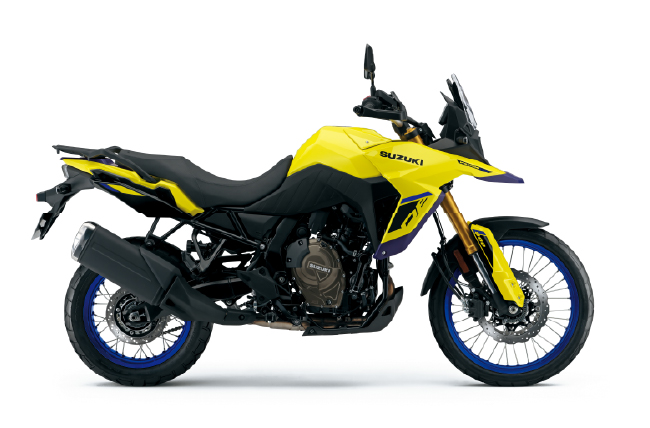
The V-STROM 800DE is a top-performing adventure tourer that is equally adept in daily on-road use and at high speed touring as it is when exploring gravel roads and country trails.
The chassis geometry features a long wheelbase, long rake, tall ground clearance and a wide handlebar grip.
The solid-mount seat is designed for comfort on long touring runs and to stand up well to input when exploring unpaved roads and trails.
The V-STROM 800DE adopts a custom 5-inch color TFT LCD multifunction instrument panel.
The vertically stacked pair of distinctive hexagonal LED headlights provide you with a clear view of the road ahead, while at the same time adding distinctive flair to the face of the V-STROM 800DE.
A USB port built into the left side of the multifunction instrument panel provide up to 5V output voltage and 2A maximum…
The V-STROM 800DE is powered by Suzuki’s brand-new parallel twin 776cm 3 engine.
All modern parallel twin engines with a 270-degree crank layout employ a primary balancer to suppress vibration.
Supplied and fitted at any Aarush Suzuki showroom. Ask about accessories
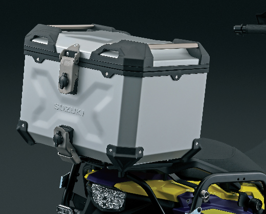
Aluminum Top Case (38l)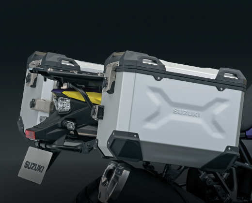
Aluminum Side Case Set (37l Each)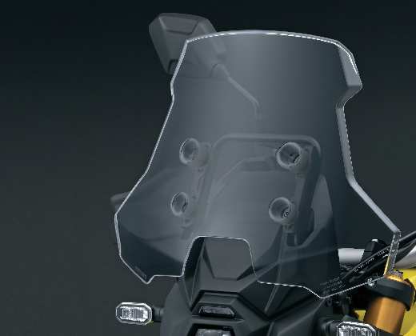
High Screen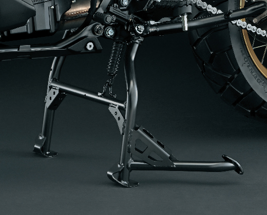
Center Stand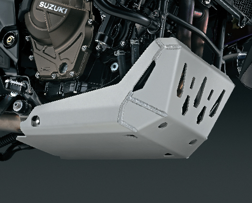
Aluminum Skid Plate (Silver)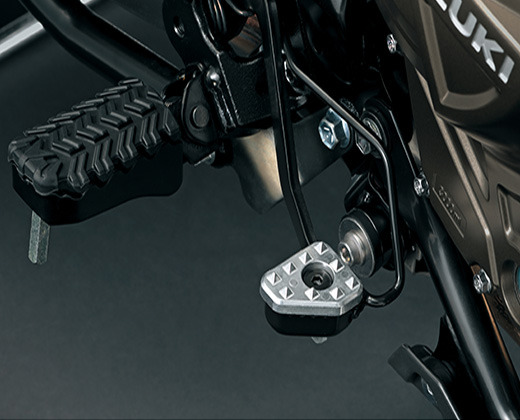
Brake Pedal Height Adjuster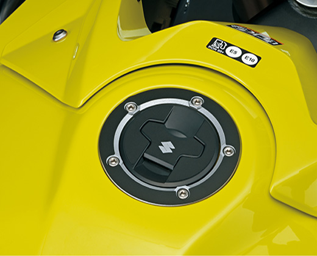
Fuel Cap Protection Sticker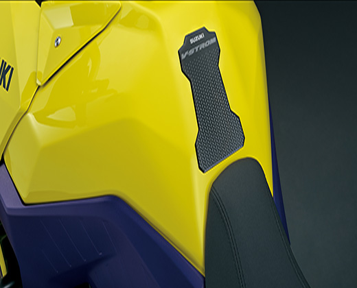
Fuel Tank Pad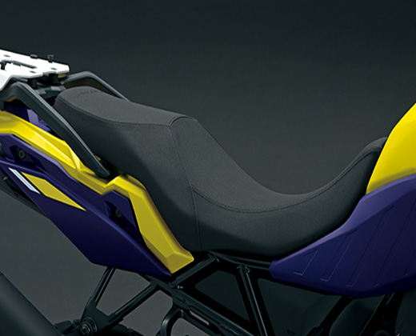
Low Seat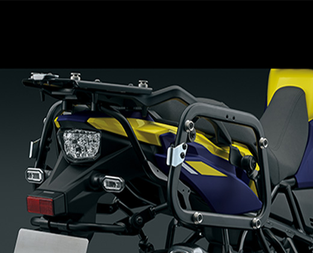
Side Case Bracket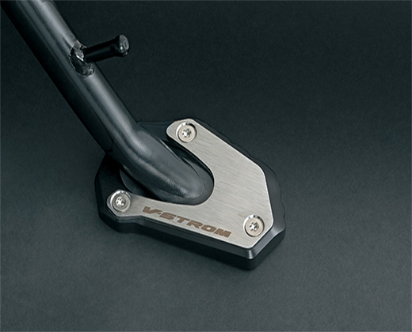
Side Stand Extension Plate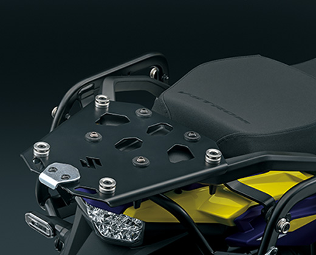
Top Case Carrier SetTechnical data as published by Suzuki Motorcycle India. Specifications can change without notice; our team will confirm details for the variant you choose.
Download V-Strom 800DE brochure (PDF) Official V-Strom 800DE page| Engine Type | 4-stroke, 2-cylinder, liquid-cooled, DOHC |
|---|---|
| Bore x Stroke | 84.0 mm x 70.0 mm (3.3 in. x 2.8 in.) |
| Displacement | 776 cc |
| Transmission Type | 6-speed constant mesh |
| Compression Ratio | 12.8 : 1 |
| Lubrication System | Forced feed circulation, Wet sump |
| Overall Length | 2,345 mm |
|---|---|
| Overall Width | 975 mm |
| Overall Height | 1,310 mm |
| Wheel Base | 1,570 mm |
| Ground Clearance | 220 mm |
| Seat Height | 855 mm |
| Kerb Weight | 232 kg |
| Front | Disc, twin |
|---|---|
| Rear | Disc |
| Front | 90/90-21M/C 54H cross ply with tube |
|---|---|
| Rear | 150/70R17M/C 69H, radial with tube |
| Rake / Trail | 28° / 114 mm |
| Front | Inverted telescopic, coil spring, oil damped |
|---|---|
| Rear | Link type, coil spring, oil damped |
| Starter system | Electric |
|---|---|
| Ignition System | Electronic ignition (transistorized) |
| Fuel system | Fuel injection |
|---|---|
| Fuel Tank Capacity | 20 L |
| Oil Capacity (Overhaul) | 3.9 L |
| CO2 emissions | 104 g/km |
Official Suzuki photography.
Visit any of our 12 showrooms, or tell us when suits you and we’ll have one ready.
Find us
See our showrooms on the map, then choose the branch nearest to you for directions, a test ride or a service visit.